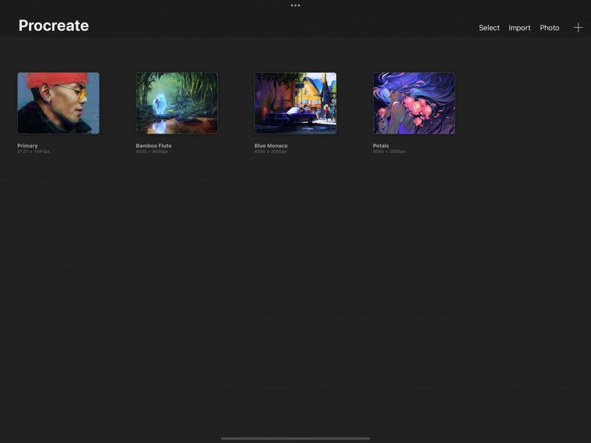
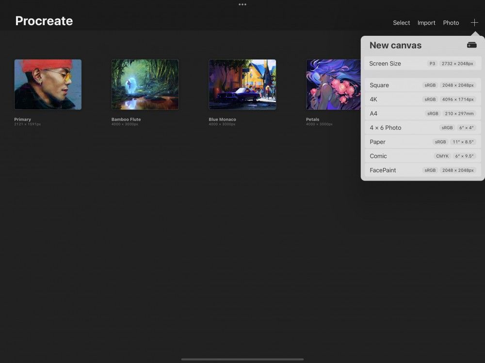
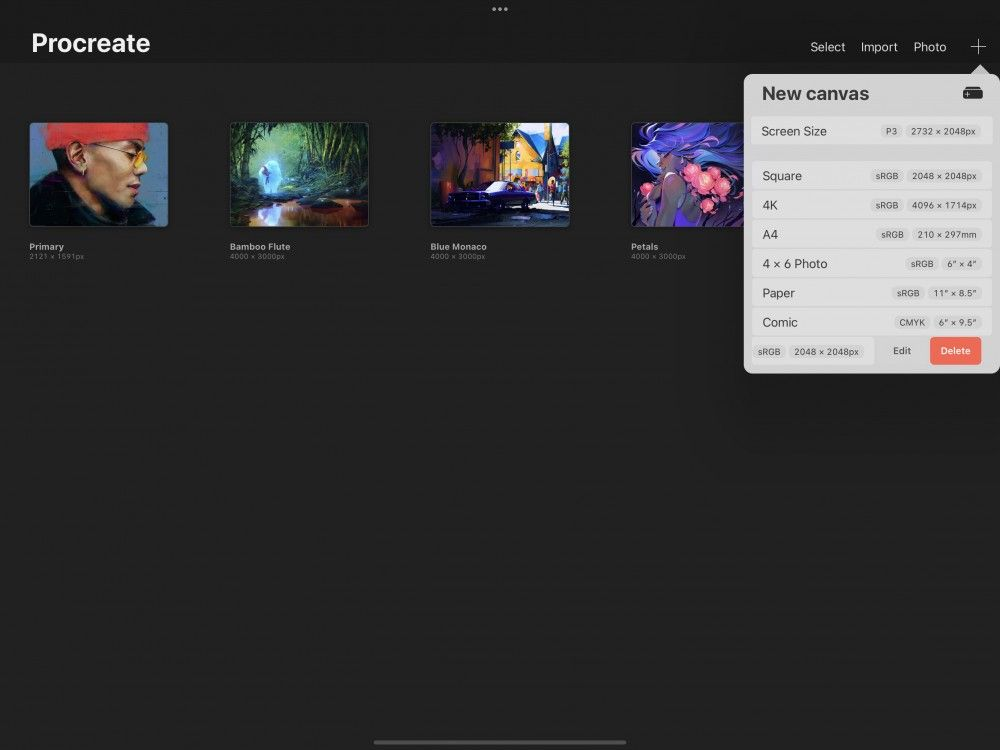
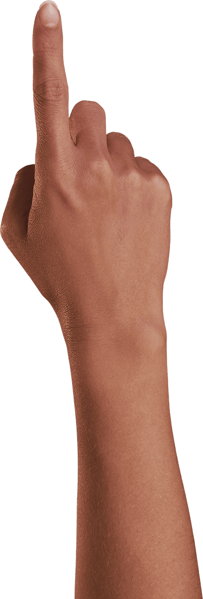

📖 Đã dịch sang tiếng Việt. Thuật ngữ chuyên môn giữ tiếng Anh — rê chuột để xem nghĩa (tooltip).
Create
Chọn từ nhiều mẫu khung vẽ định sẵn, hoặc thiết lập một Custom Canvas cho tác phẩm của bạn.
Tạo Canvas (khung vẽ)
Tạo khung vẽ mới bằng cách chạm vào biểu tượng + ở trên cùng bên phải của Gallery (thư viện) để mở menu New Canvas (khung vẽ mới).

Sử dụng Template (mẫu)
Procreate cung cấp nhiều mẫu định sẵn giúp bạn dễ dàng tạo khung vẽ mới cho dự án.

Các mẫu Canvas (khung vẽ)
Chọn từ các mẫu khung vẽ định sẵn với nhiều kích thước hữu ích.
Trong menu New canvas, bạn sẽ thấy danh sách các khung vẽ định sẵn. Các mẫu này bao gồm Screen Size (kích thước màn hình), Square (vuông), 4K độ phân giải cao, giấy A4, ảnh 4 x 6 và US Paper (giấy chuẩn Mỹ).


Chỉnh sửa hoặc xóa Preset (thiết lập sẵn)
Vuốt sang trái trên một khung vẽ định sẵn để chỉnh sửa hoặc xóa nó.
Chạm nút Edit (chỉnh sửa) để vào giao diện Custom Canvas (khung vẽ tùy chỉnh). Tại đây bạn có thể điều chỉnh các thuộc tính khung vẽ được mô tả bên dưới. Bạn cũng có thể kiểm tra số lớp (layer) tối đa mà khung vẽ của bạn hỗ trợ.
Tạo Custom Canvas (khung vẽ tùy chỉnh)
When preset sizes aren't working for you, edit or create your own canvas to suit.
Màn hình Custom Canvas (khung vẽ tùy chỉnh)
Chạm biểu tượng + để mở menu New Canvas. Từ đây chạm vào biểu tượng hình chữ nhật có dấu + ở trên cùng bên phải để mở màn hình Custom Canvas.
Tại đây, bạn có thể điều chỉnh khung vẽ theo các cách sau:
Name
- Dimensions (kích thước)
- Color profile (hồ sơ màu)
- Time-lapse settings (cài đặt tua thời gian)
- Canvas properties (thuộc tính khung vẽ)
Đổi tên khung vẽ của bạn.
Chạm vào dòng chữ Untitled Canvas (khung vẽ không tên) ở trên cùng màn hình để bật bàn phím hệ thống. Gõ tên mới cho mẫu khung vẽ tùy chỉnh, rồi chạm Return để xác nhận. Bạn cũng có thể dùng Apple Pencil và Scribble (viết tay) để viết tên khung vẽ tùy chỉnh.
Dimensions (kích thước)
Thay đổi Width (chiều rộng), Height (chiều cao) hoặc DPI của mẫu khung vẽ mới.
Chạm vào giá trị bạn muốn điều chỉnh. Bàn phím số sẽ hiện ra bên dưới để bạn nhập kích thước mong muốn.
Khung vẽ của bạn có thể nhỏ đến 1 x 1 pixel, hoặc lớn tới 16K theo một chiều, tùy thuộc vào dòng iPad của bạn.
Kích thước khung vẽ có thể đặt theo Milimet, Centimet, Inch hoặc Pixel. Bạn có thể đổi đơn vị đo bằng các nút ở bên trái bàn phím, dưới cùng màn hình.
Color Profile (hồ sơ màu)
Color Profiles (hồ sơ màu) là các cách khác nhau để tác phẩm của bạn quản lý màu.
RGB là hồ sơ màu tốt nhất để xem tác phẩm trên màn hình. Nó quản lý màu theo cùng cách màn hình hoạt động: nhìn màu là sự pha trộn của đỏ, xanh lá và xanh dương.
CMYK là lựa chọn tốt nhất cho tác phẩm destined để in ấn. Nó nhìn mỗi màu là sự pha của lục lam (cyan), hồng sẫm (magenta), vàng (yellow) và đen (black). Đây là cách hầu hết máy in thương mại xử lý màu.
Knowing your artwork's intended destination should help you choose the right color space. The best suited color space for your destination will give the most vivid and accurate color results. If you're not sure which color space is best for you, the default setting is best.
Procreate được tích hợp sẵn mười bảy hồ sơ màu. Chúng được thiết kế cho nhiều mục đích hiển thị và in ấn. Các hồ sơ mặc định — Display P3 và Generic CMYK Profile — sẽ đáp ứng nhu cầu của hầu hết họa sĩ.
Chạm Import (nhập) để thêm hồ sơ màu của riêng bạn.
Time-lapse Settings (cài đặt tua thời gian)
Procreate có thể ghi lại quá trình bạn thực hiện một tác phẩm. Sau đó bạn có thể phát lại thành video tua thời gian tốc độ cao về quá trình sáng tạo.
Giờ đây bạn có thể chọn Time-lapse Settings khác nhau cho mỗi Canvas mới tạo. Chọn độ phân giải video từ 1080p đến 4K đầy đủ. Điều chỉnh chất lượng ghi hình từ Low (dung lượng nhỏ, dễ chia sẻ) đến Lossless (chất lượng hoàn hảo, không mất chi tiết, nhưng dung lượng lớn hơn).
HEVC là một dạng nén video mới dành cho sáng tạo motion graphics (đồ họa chuyển động) nâng cao. HEVC cho phép xuất kèm alpha channel (kênh trong suốt) trong tệp. HEVC cũng cho chất lượng video cao hơn ở dung lượng nhỏ hơn. Chức năng này có ứng dụng trong lớp phủ video, lập trình, tích hợp web và kỹ thuật green-screen (phông xanh). Lưu ý rằng HEVC chưa được hỗ trợ ở mọi nơi
Trong Time-lapse, HEVC cho phép nền trong suốt trong video. Để xuất Time-lapse với nền trong suốt, Color Profile của Canvas phải được đặt là sRGB IEC61966-2.1 và HEVC phải được bật.
Tìm hiểu thêm về Time-lapse Video (video tua thời gian)
Canvas Properties (thuộc tính khung vẽ)
Trong Canvas properties, bạn có thể chọn màu nền mặc định cho mẫu khung vẽ, hoặc chọn ẩn nền.
Still have questions?
If you didn't find what you're looking for, explore our video resources on YouTube or contact us directly. We’re always happy to help.